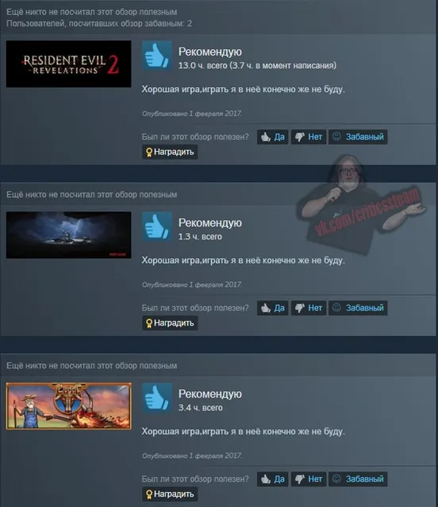
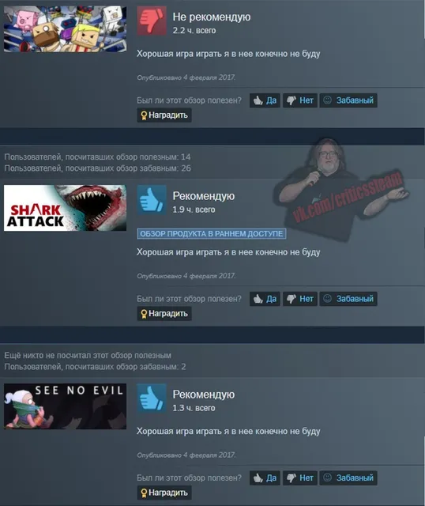
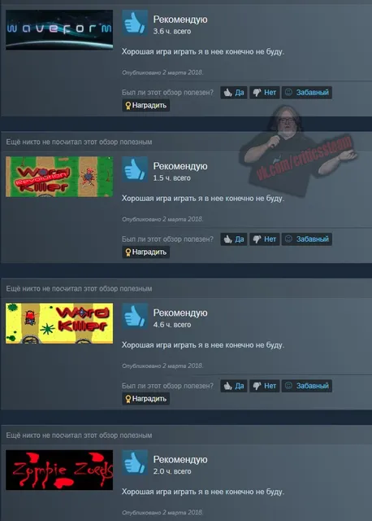
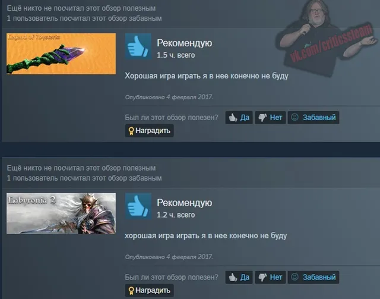

Вопрос дня
ВКонтакте
Мы с вами уже два раза обсуждали абсурдные ситуации плагиата обзоров, когда мног…
9 августа 2020 · оригинал во ВКонтакте ↗





#ВопросДня@criticssteam
Мы с вами уже два раза обсуждали абсурдные ситуации плагиата обзоров, когда много людей пишут слово в слово одно и тоже про определенную игру, пришло время обсудить обратную ситуации, когда один человек пишет одно и тоже про разные игры, к слову, у нас уже был [https://vk.com/wall-196461758_296|пост, в котором был показан подобный человек], во время поиска угарных обзоров, мы наткнулись еще на подобного индивида, давайте же попытаемся раскрыть смысл и логику подобного поведения, неужели всё дело лишь в ограниченности фантазии авторов, или в этом есть что-то большее?
✍🏻Обязательно выскажитесь по этому поводу в комментарии!
Мы с вами уже два раза обсуждали абсурдные ситуации плагиата обзоров, когда много людей пишут слово в слово одно и тоже про определенную игру, пришло время обсудить обратную ситуации, когда один человек пишет одно и тоже про разные игры, к слову, у нас уже был [https://vk.com/wall-196461758_296|пост, в котором был показан подобный человек], во время поиска угарных обзоров, мы наткнулись еще на подобного индивида, давайте же попытаемся раскрыть смысл и логику подобного поведения, неужели всё дело лишь в ограниченности фантазии авторов, или в этом есть что-то большее?
✍🏻Обязательно выскажитесь по этому поводу в комментарии!